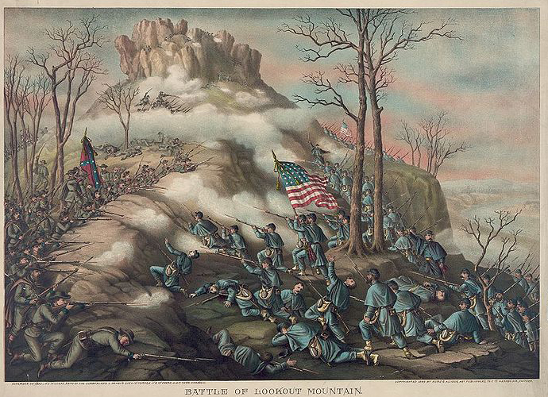

|
The Battle of Lookout Mountain, also known as "The Battle
Above the Clouds," was one of two (the other was The Battle
of Missionary Ridge) resounding Union victories that
occurred within a day of each other and that helped secure
Tennessee for the Union. General Ulysses S. Grant had come
to Chattanooga with the intent of breaking the Confederate

Gen. Ulysses S. Grant
|
siege of that city. His ultimate success in the Chattanooga
Campaign prompted President Lincoln to invite him to
Washington D.C. to take command of all Union armies, and
marked an important turning point in the war for the North.
After the defeat of Northern forces at Chickamauga,
Georgia in September of 1863, Union General William S.
Rosecrans had withdrawn his demoralized soldiers to
Chattanooga. Meanwhile, Rosecrans' opponent at Chickamauga,
Braxton Bragg, moved his men onto the heights that rose
above the city of Chattanooga, from Lookout Mountain on the
southwest to Missionary Ridge to the east. In Rosecrans'
view, Chattanooga was beginning to look "more like a prison
than a prize." Bragg had effectively encircled the Yankees
and cut off their supply lines.
Shortly thereafter, Lincoln replaced the incompetent
Rosecrans with Major General George Henry Thomas, whose
bravery at Chickamauga had earned him the title "Rock of
Chickamauga." Thomas swore to Grant that he and his men
would hold Chattanooga "until we starve," and they very
nearly did. Grant, who had been put in control of the new
"Division of the Mississippi" in October of 1863, called for
reinforcements and moved to break the Confederate siege of
Chattanooga. By mid-November of 1863, General William T.
Sherman had brought 17,000 men from the Army of the
Tennessee and General Joseph Hooker had brought 20,000 men
from the Army of the Potomac to supplement the 35,000 men in
Thomas' Army of the Cumberland.
It was clear to Grant and his subordinates that the siege
on Chattanooga would have to be broken, and quickly, or the
Federals would be forced to surrender. It was also clear
that the Confederate position on rugged Lookout Mountain
would have to be taken for Union troops to have any chance
at breaking the siege. This appeared to be an impossible
task, however. The formidable heights of Lookout Mountain,
rising some 1,100 above the valley, were filled with what
seemed like thousands of well-entrenched Confederates, with
supporting units nearby.
On the evening of November 23, Federal troops began
massing underneath Lookout Mountain. Confederate Major
General Carter L. Stevenson wrote in code to his commander,
Braxton Bragg that he doubted his small division (numbering
2,694 on the mountain, plus cavalry and cannon) had the
strength to hold off an assault. Unknown to the
|

An 1889 lithograph of the
Battle of Lookout Mountain.
|
Confederates, the Union had broken their special code. The
Union's leaders realized that the number of Confederates
holding Lookout Mountain was not nearly as great as they had
imagined.
With this information, Grant launched an attack upon the
Confederate position on Lookout Mountain on November 24th.
At 8:00 a.m. General Joseph Hooker directed the forces
consisting of one division from each of the Union armies
taking part in the Chattanooga Campaign, up the mountain.
Repeated Union assaults were successful in driving the
Confederates from the lofty summit, with the last Rebel
units withdrawing by 8:00 p.m.
An unusual feature of the battle was that a swirling mist
of fog and clouds obscured much of the fighting during the
day from the thousands of soldiers watching intently from
the valley below. Only occasional flashes of red light
penetrating the thick cover gave indication of an ongoing
battle. When the clouds finally broke, Union soldiers
cheered when they saw the retreating Confederates.
Early the next morning, Federal soldiers swiftly climbed
the now vacant summit and planted the Stars and Stripes on
the top. Union General Montgomery C. Meigs, who watched the
action from Grant's headquarters, declared Hooker's attack
"The Battle Above the Clouds." Few who were there ever
forgot the eerie experience, including U.S. Grant who later
wrote, "The Battle of Lookout Mountain is one of the
romances of the war. There was no such battle and no action
even worthy to be called a battle on Lookout Mountain. It is
all poetry."
Casualty (killed, wounded and captured) figures for both
sides were never given precisely, only the total numbers for
the Chattanooga Campaign. Out of 64,165 Confederates, losses
were 6,667; Union causalities were 5,824 out of 56,359
engaged.
Source: Joan Waugh, ed., Facts on File Encyclopedia of American
History: Civil War and Reconstruction, 1856 to 1869 (New York: Facts on
File, 2003), 216-217.
|